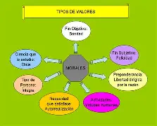

La crisis de vcalores en la sociedad actual se manifiesta en la falta de ética,
moralidad y empatía, lo que genera problemas como la violencia, la corrupción y la desconfianza en las instituciones.>Causas de la Crisis de Valores
Falta de Educación en Valores: La educación en principios éticos y morales ha sido descuidada, lo que lleva a que las nuevas generaciones no desarrollen un sentido sólido de responsabilidad y compromiso social.
Influencia de los Medios de Comunicación: Los medios, incluyendo la televisión y las redes sociales, a menudo promueven comportamientos irresponsables y glorifican la violencia, contribuyendo a la pérdida de valores fundamentales
Cambios Sociales y Económicos: La competitividad extrema y el individualismo han llevado a que las personas prioricen sus intereses personales sobre el bienestar colectivo, debilitando la cohesión social.
Consecuencias de la Pérdida de Valores
Aumento de la Violencia y la Delincuencia: La falta de respeto y empatía ha contribuido a un aumento en los conflictos y situaciones violentas en la sociedad.
Desintegración Familiar: Las relaciones familiares se han vuelto más frágiles, lo que afecta la estructura social y el apoyo emocional entre individuos.
Corrupción y Falta de Ética: En el ámbito laboral y político, la corrupción se ha vuelto más común, lo que genera desconfianza en las instituciones y en las personas
